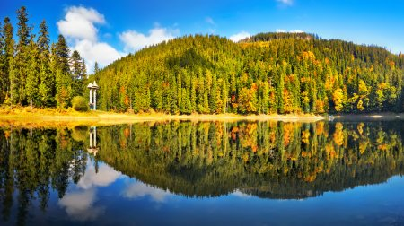

Ось один з варіантів подорожі

Виїзд зі Львова (08:00) – Чинадієво (екскурсія замком Сент-Міклош) – Мукачево (обід) –
- Косино (купання в термальному басейні) – Берегівське вулканічне низькогір’я (дегустація вин) –
- Берегівський р-н (ночівля в садибах сільського зеленого туризму, поселення о 21:00).
Cніданок і виїзд (08:00) – Ужгород (екскурсія містом, замком та обід)
– Лумшори (купання в чанах ) – Львів (повернення о 23:30).
Посеред старовинного містечка Сент-Міклош розташований похмурий середньовічний замок
барона Перені (XIV ст.), з цікавим інтер’єром, потаємним ходом та спальнею мужньої Ілони Зріні,
в якій вона зустрічалася з графом Імре Текелі, через це його ще називають «Замок кохання».
Врятував споруду художник Йосиф Бартош, який взяв її в концесію.
Супер-сучасний відпочинковий комплекс “Термальні води Косино” розташований у дубовому гаю,
має 5 басейнів, 7 саун, середня температура в термальних басейнах + 41 °C. Гордістю комплексу є
найбільші в України фонтани-джакузі з “кавою”, “вином”, “пивом”, “паленкою” та фонтан-ілюзія
“Золотий кран здоров’я” висотою 15,5 метра. Відпочинок тут подобається дорослим і дітям,
а також приносить користь здоров’ю.
Околиці Берегова здавна на весь світ славляться своїми винами, які мають чудовий аромат і
велике багатство смакових властивостей. Це завдяки вулканічним породам, на яких росте
виноград та енергії сонця, адже саме тут найбільше сонячних днів у Закарпатті.
Перша згадка про це вічно прикордонне місто на річці Уж датується 872 роком, воно зачарує своїм шармом і
колоритом навіть найвибагливішого туриста. Прогуляйтеся історичною вулицею міста - Корзо, обов’язково
огляньте найвідоміший храм міста Катедральний Хрестовоздвиженський собор (1841р.), римо-католицький
костел св. Георгія (1775р.), огляньте один з найстаріших в Україні замок (ХIV ст.), Закарпатський музей
народної архітектури та побуту (скансен) та обов’язково завітайте в культову корчму “Деца у нотаря”.
В підніжжі найбільшої полонини українських Карпат полонини Руна знаходиться бальнеологічний курорт Лумшори,
який відомий ще з XVII ст. В ньому тісно переплелися райської краси природа і елементи пекла – величезні металеві
чани, в яких Вас варитимуть на повільному вогні в мінеральній сірководневій воді. Для більшої насолоди можна чергувати
“варіння” в чані і купання в холодній воді. Такий відпочинок окрім незабутніх вражень, приводить до оздоровлення
опорно-рухового апарату і омолоджує організм на десять років.
| замок “Сент-Міклош”: добровільна пожертва |
| термальний басейн “Косино”: 400-450 грн. |
| дегустація вин: 60 грн./особа, екскурсія без споживання вина 30 грн./особа |
| відвідання веселого ресторану “Деца у нотаря”: 5 грн. |
| Ужгородський замок: 50 грн. |
| купання в чанах з мінеральною водою с. Лумшори: загальний - 140 грн. |